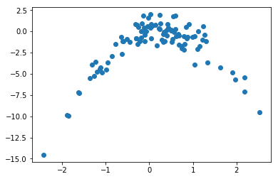

Exercise 5.8
import pandas as pd
import numpy as np
import math
import matplotlib.pyplot as plt
from sklearn.model_selection import LeaveOneOut # To use cross-validation in (c); only available after scikit v0.17.1
from sklearn.linear_model import LinearRegression
from sklearn.preprocessing import PolynomialFeatures
from sklearn.pipeline import Pipeline
from sklearn.metrics import mean_squared_error
import statsmodels.api as sm # To fit models using least squares
%matplotlib inline(a)
np.random.seed(1) # Random numbers generated by Python are different from those generated by R, as mentioned in Exercise 3.11
y = np.random.normal(size=100) # By default np.random.normal considers a standard normal, so we just have to define the size
x = np.random.normal(size=100)
epsilon = np.random.normal(size=100)
y = x - 2 * x**2 + epsilonn = number of observations = 100
p = number of predictors = 2 (X and X^2)
Model in equation form: \[Y = X - 2 X^{2} + \epsilon\]
(b)
plt.scatter(x, y);
Comments:
- Quadratic plot
- Convex function with negative concavity
- X from about -2 to 2
- Y from about -10 to 2
(c)
# Set new random seed
np.random.seed(5)# Create LOOCV object
loo = LeaveOneOut()# Organize data into a dataframe (easier to handle)
df = pd.DataFrame({'x':x, 'y':y})# Initiate variables
min_deg = 1 # Minimum degree of the polynomial equations considered
max_deg = 4+1 # Maximum degree of the polynomial equations considered
scores = []
# Compute mean squared error (MSE) for the different polynomial equations.
for i in range(min_deg, max_deg):
# Leave-one-out cross validation
for train, test in loo.split(df):
X_train = df['x'][train]
y_train = df['y'][train]
X_test = df['x'][test]
y_test = df['y'][test]
# Pipeline
model = Pipeline([('poly', PolynomialFeatures(degree = i)),
('linear', LinearRegression())])
model.fit(X_train[:,np.newaxis], y_train)
# MSE
score = mean_squared_error(y_test, model.predict(X_test[:,np.newaxis]))
scores.append(score)
print('Model %i (MSE): %f' % (i,np.mean(scores)))
scores = []/Users/disciplina/anaconda3/envs/islp/lib/python3.6/site-packages/scipy/linalg/basic.py:1226: RuntimeWarning: internal gelsd driver lwork query error, required iwork dimension not returned. This is likely the result of LAPACK bug 0038, fixed in LAPACK 3.2.2 (released July 21, 2010). Falling back to 'gelss' driver.
warnings.warn(mesg, RuntimeWarning)
Model 1 (MSE): 8.292212
Model 2 (MSE): 1.017096
Model 3 (MSE): 1.046553
Model 4 (MSE): 1.057493(d)
# Set new random seed
np.random.seed(10)# Compute MSE as in (c)
min_deg = 1
max_deg = 4+1
scores = []
for i in range(min_deg, max_deg):
for train, test in loo.split(df):
X_train = df['x'][train]
y_train = df['y'][train]
X_test = df['x'][test]
y_test = df['y'][test]
model = Pipeline([('poly', PolynomialFeatures(degree = i)),
('linear', LinearRegression())])
model.fit(X_train[:,np.newaxis], y_train)
score = mean_squared_error(y_test, model.predict(X_test[:,np.newaxis]))
scores.append(score)
print('Model %i (MSE): %f' % (i,np.mean(scores)))
scores = []Model 1 (MSE): 8.292212
Model 2 (MSE): 1.017096
Model 3 (MSE): 1.046553
Model 4 (MSE): 1.057493The results are exactly the same because we only remove one observation from the training set. Thus, there is no random effect resulting from the observations used for the test set. LOOCV will always be the same, no matter the random seed.
(e)
The model that had the smallest LOOCV error was model (ii). This was an expected result because model (ii) has the same form as y (second order polynomial).
Comment: If we used np.random.seed(0) instead of np.random.seed(1) or np.random.seed(10), the answer to the problem would be different. Using seed(0), the epsilon values are proportional higher to the remaining values in the y equation. Thus, its influence is greater and the random effect prevails over the second order parameters y. We didn’t try what happens for other seed values, but there may be other seed values that produce a similar effect to seed(0).
(f)
# Models with polynomial features
min_deg = 1
max_deg = 4+1
for i in range(min_deg, max_deg):
pol = PolynomialFeatures(degree = i)
X_pol = pol.fit_transform(df['x'][:,np.newaxis])
y = df['y']
model = sm.OLS(y, X_pol)
results = model.fit()
print(results.summary()) OLS Regression Results
==============================================================================
Dep. Variable: y R-squared: 0.088
Model: OLS Adj. R-squared: 0.079
Method: Least Squares F-statistic: 9.460
Date: Fri, 05 Jan 2018 Prob (F-statistic): 0.00272
Time: 17:15:28 Log-Likelihood: -242.69
No. Observations: 100 AIC: 489.4
Df Residuals: 98 BIC: 494.6
Df Model: 1
Covariance Type: nonrobust
==============================================================================
coef std err t P>|t| [0.025 0.975]
------------------------------------------------------------------------------
const -1.7609 0.280 -6.278 0.000 -2.317 -1.204
x1 0.9134 0.297 3.076 0.003 0.324 1.503
==============================================================================
Omnibus: 40.887 Durbin-Watson: 1.957
Prob(Omnibus): 0.000 Jarque-Bera (JB): 83.786
Skew: -1.645 Prob(JB): 6.40e-19
Kurtosis: 6.048 Cond. No. 1.19
==============================================================================
Warnings:
[1] Standard Errors assume that the covariance matrix of the errors is correctly specified.
OLS Regression Results
==============================================================================
Dep. Variable: y R-squared: 0.882
Model: OLS Adj. R-squared: 0.880
Method: Least Squares F-statistic: 362.9
Date: Fri, 05 Jan 2018 Prob (F-statistic): 9.26e-46
Time: 17:15:28 Log-Likelihood: -140.40
No. Observations: 100 AIC: 286.8
Df Residuals: 97 BIC: 294.6
Df Model: 2
Covariance Type: nonrobust
==============================================================================
coef std err t P>|t| [0.025 0.975]
------------------------------------------------------------------------------
const -0.0216 0.122 -0.177 0.860 -0.264 0.221
x1 1.2132 0.108 11.238 0.000 0.999 1.428
x2 -2.0014 0.078 -25.561 0.000 -2.157 -1.846
==============================================================================
Omnibus: 0.094 Durbin-Watson: 2.221
Prob(Omnibus): 0.954 Jarque-Bera (JB): 0.009
Skew: -0.022 Prob(JB): 0.995
Kurtosis: 2.987 Cond. No. 2.26
==============================================================================
Warnings:
[1] Standard Errors assume that the covariance matrix of the errors is correctly specified.
OLS Regression Results
==============================================================================
Dep. Variable: y R-squared: 0.883
Model: OLS Adj. R-squared: 0.880
Method: Least Squares F-statistic: 242.1
Date: Fri, 05 Jan 2018 Prob (F-statistic): 1.26e-44
Time: 17:15:28 Log-Likelihood: -139.91
No. Observations: 100 AIC: 287.8
Df Residuals: 96 BIC: 298.2
Df Model: 3
Covariance Type: nonrobust
==============================================================================
coef std err t P>|t| [0.025 0.975]
------------------------------------------------------------------------------
const 0.0046 0.125 0.037 0.971 -0.244 0.253
x1 1.0639 0.189 5.636 0.000 0.689 1.439
x2 -2.0215 0.081 -24.938 0.000 -2.182 -1.861
x3 0.0550 0.057 0.965 0.337 -0.058 0.168
==============================================================================
Omnibus: 0.034 Durbin-Watson: 2.253
Prob(Omnibus): 0.983 Jarque-Bera (JB): 0.050
Skew: 0.032 Prob(JB): 0.975
Kurtosis: 2.911 Cond. No. 6.55
==============================================================================
Warnings:
[1] Standard Errors assume that the covariance matrix of the errors is correctly specified.
OLS Regression Results
==============================================================================
Dep. Variable: y R-squared: 0.885
Model: OLS Adj. R-squared: 0.880
Method: Least Squares F-statistic: 182.4
Date: Fri, 05 Jan 2018 Prob (F-statistic): 1.13e-43
Time: 17:15:28 Log-Likelihood: -139.24
No. Observations: 100 AIC: 288.5
Df Residuals: 95 BIC: 301.5
Df Model: 4
Covariance Type: nonrobust
==============================================================================
coef std err t P>|t| [0.025 0.975]
------------------------------------------------------------------------------
const 0.0866 0.144 0.600 0.550 -0.200 0.373
x1 1.0834 0.189 5.724 0.000 0.708 1.459
x2 -2.2455 0.214 -10.505 0.000 -2.670 -1.821
x3 0.0436 0.058 0.755 0.452 -0.071 0.158
x4 0.0482 0.043 1.132 0.260 -0.036 0.133
==============================================================================
Omnibus: 0.102 Durbin-Watson: 2.214
Prob(Omnibus): 0.950 Jarque-Bera (JB): 0.117
Skew: 0.069 Prob(JB): 0.943
Kurtosis: 2.906 Cond. No. 17.5
==============================================================================
Warnings:
[1] Standard Errors assume that the covariance matrix of the errors is correctly specified.To answer to the question, we should pay attention to the t-statistic value of each coefficient.
As we can see, when we have a second order polynomial, both x1 and x2 have high t-statistic values. When we have a third order polynomial, x2 has the highest t-statistic, followed by x1 and then by x3. Finally, when we have a fourth order polynomial, x2 is the variable with the highest t-statistic, followed by x1, x4 and x3.
We can conclude that x2 and x1 are variables with relevance for the presented models. These results agree with the conclusions drawn based on the cross-validation results, showing that the first and second order terms are the most significant.
References
- https://github.com/scikit-learn/scikit-learn/issues/6161 (scikit.model_selection only available after 0.17.1)
- http://scikit-learn.org/stable/install.html (to install scikit)
- http://stats.stackexchange.com/questions/58739/polynomial-regression-using-scikit-learn (polynomial linear regression)
- http://stackoverflow.com/questions/29241056/the-use-of-python-numpy-newaxis (use of np.newaxis)
- http://scikit-learn.org/stable/modules/linear_model.html#polynomial-regression-extending-linear-models-with-basis-functions (about the use of pipeline)